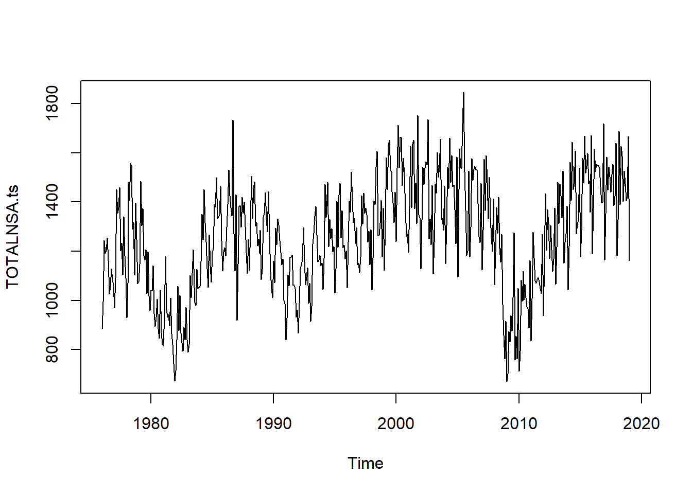
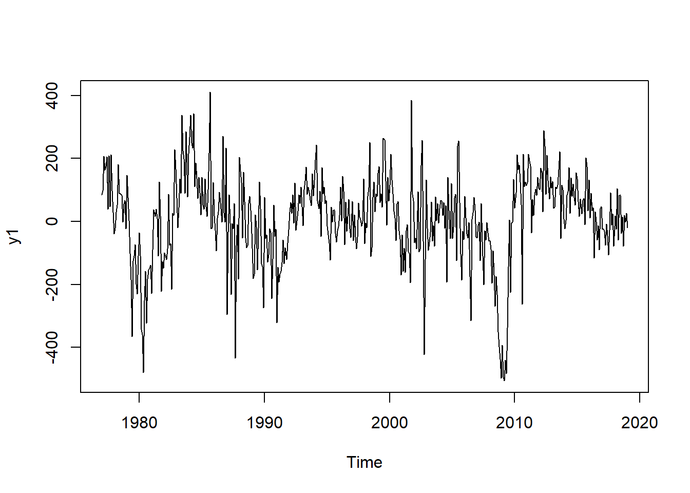
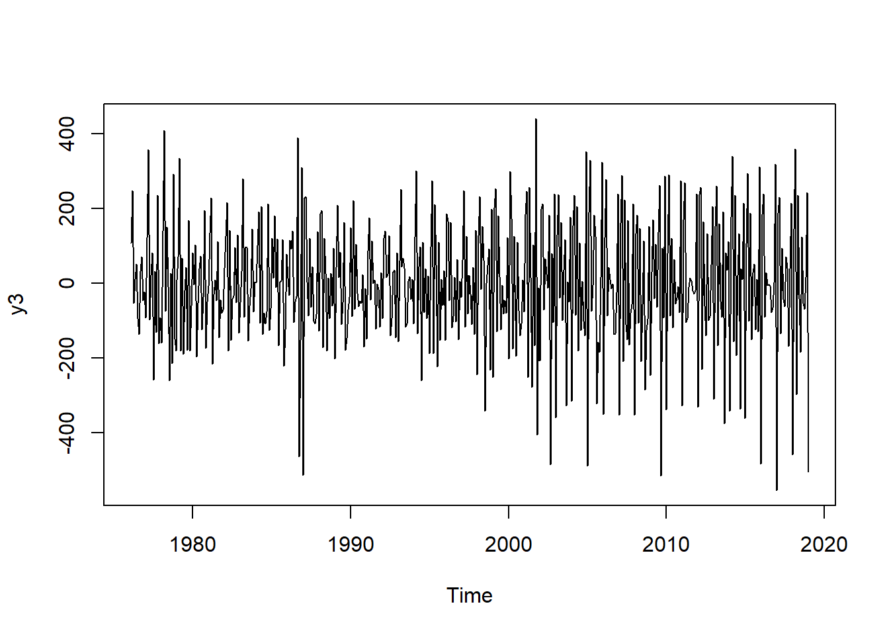
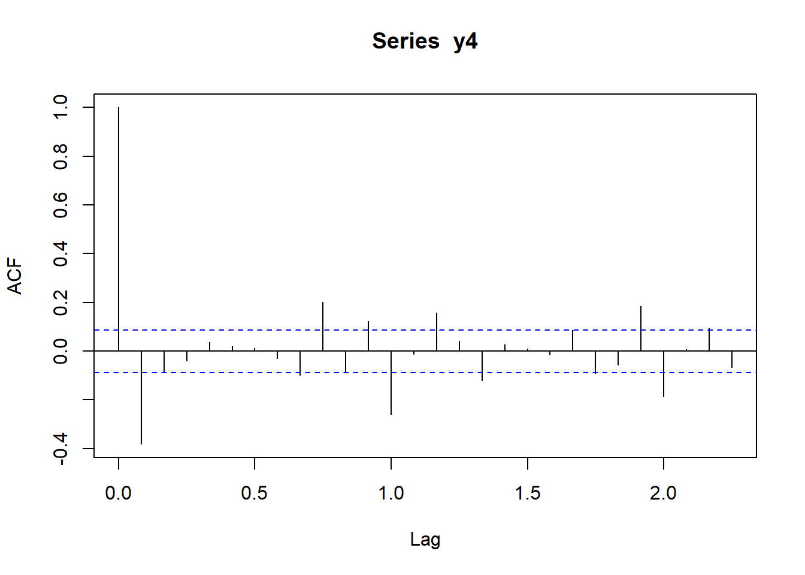
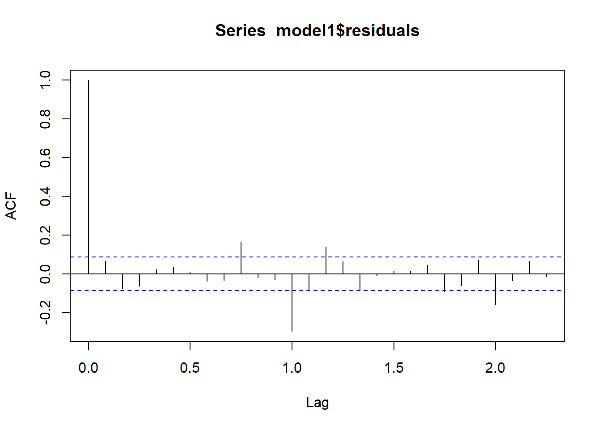
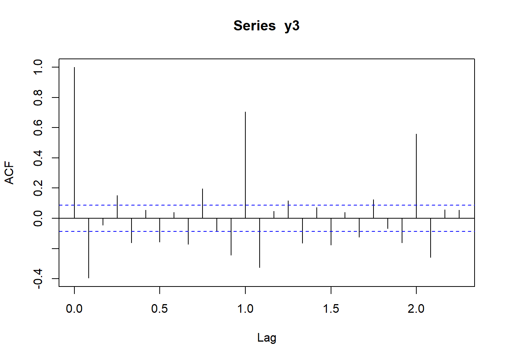

Machine Learning on US presidential election of 2016
Leonard Henriquez, Adrien Lequiller & Eddy Ohayon
2019-02-11
mydata=read.csv("input/TOTALNSA.csv",header=T,dec=".")
dim(mydata)## [1] 517 2TOTALNSA.ts=ts(mydata$TOTALNSA,frequency=12,c(1976,1))
plot(TOTALNSA.ts)
#there is clear growing trend but with period of crisis#maybe we could start a new dataset from 2007-2008 for better predictions
monthplot(TOTALNSA.ts)
#saisonnalitéy1= diff(TOTALNSA.ts,lag=12)
plot(y1)
#mauvais y2= diff(log(TOTALNSA.ts),lag=12)
plot(y2)
#mauvais y3=diff(TOTALNSA.ts)
plot(y3)
#pas maly4=diff(diff(TOTALNSA.ts,lag=12))
plot(y4)
#pas mal aussiacf(y3) 
pacf(y3)
acf(y4)
pacf(y4)
model1<- arima(TOTALNSA.ts, order = c(0,1,1),seasonal=c(0,1,0))
model1##
## Call:
## arima(x = TOTALNSA.ts, order = c(0, 1, 1), seasonal = c(0, 1, 0))
##
## Coefficients:
## ma1
## -0.6594
## s.e. 0.0359
##
## sigma^2 estimated as 11634: log likelihood = -3074.57, aic = 6153.14acf(model1$residuals) 
Box.test(model1$residuals, lag = 15, type="Ljung-Box")##
## Box-Ljung test
##
## data: model1$residuals
## X-squared = 87.917, df = 15, p-value = 2.423e-12#fonctionne pasmodel2<- arima(TOTALNSA.ts, order = c(2,1,2),seasonal=c(2,1,2))
model2##
## Call:
## arima(x = TOTALNSA.ts, order = c(2, 1, 2), seasonal = c(2, 1, 2))
##
## Coefficients:
## ar1 ar2 ma1 ma2 sar1 sar2 sma1 sma2
## 0.4346 -0.1594 -1.0160 0.2798 0.6690 -0.2832 -1.2371 0.3719
## s.e. 0.4428 0.0728 0.4453 0.3068 0.1659 0.0679 0.1666 0.1459
##
## sigma^2 estimated as 8056: log likelihood = -2988.03, aic = 5994.06acf(model2$residuals) 
Box.test(model2$residuals, lag = 15, type="Ljung-Box")##
## Box-Ljung test
##
## data: model2$residuals
## X-squared = 22.505, df = 15, p-value = 0.09522#semble etre le plus court et le meilleur apres plusieurs testsmyforecast<-predict(model2,n.ahead=5)
point.forecast<-myforecast$pred
SE<-myforecast$se
lower<-point.forecast-qnorm(0.975)*SE
upper<-point.forecast+qnorm(0.975)*SE
plot(TOTALNSA.ts,xlim=c(2000,2019))
# we adjust the scale of the axes to get a nicer plot
lines(point.forecast,col="red")
lines(lower,col="blue")
lines(upper,col="blue")
LS0tDQp0aXRsZTogIk1hY2hpbmUgTGVhcm5pbmcgb24gVVMgcHJlc2lkZW50aWFsIGVsZWN0aW9uIG9mIDIwMTYiDQphdXRob3I6ICdbTGVvbmFyZCBIZW5yaXF1ZXpdKGh0dHBzOi8vZ2l0aHViLmNvbS9sZW9uYXJkLWhlbnJpcXVlei8pLCBBZHJpZW4gTGVxdWlsbGVyICYgRWRkeSBPaGF5b24nDQpkYXRlOiAiYHIgU3lzLkRhdGUoKWAiDQpvdXRwdXQ6IHBkZl9kb2N1bWVudA0KYWx3YXlzX2FsbG93X2h0bWw6IHllcw0KLS0tDQoNCmBgYHtyIG1lc3NhZ2U9RkFMU0UsIHdhcm5pbmc9RkFMU0UsIGluY2x1ZGU9RkFMU0V9DQprbml0cjo6b3B0c19jaHVuayRzZXQoY2FjaGUgPSBUUlVFLCB3YXJuaW5nPUZBTFNFKQ0Kc2VlZCA8LSAzMQ0KYGBgDQoNCmBgYHtyfQ0KbXlkYXRhPXJlYWQuY3N2KCJpbnB1dC9UT1RBTE5TQS5jc3YiLGhlYWRlcj1ULGRlYz0iLiIpDQpkaW0obXlkYXRhKQ0KVE9UQUxOU0EudHM9dHMobXlkYXRhJFRPVEFMTlNBLGZyZXF1ZW5jeT0xMixjKDE5NzYsMSkpDQpwbG90KFRPVEFMTlNBLnRzKQ0KI3RoZXJlIGlzIGNsZWFyIGdyb3dpbmcgdHJlbmQgYnV0IHdpdGggcGVyaW9kIG9mIGNyaXNpcw0KYGBgDQoNCmBgYHtyfQ0KI21heWJlIHdlIGNvdWxkIHN0YXJ0IGEgbmV3IGRhdGFzZXQgZnJvbSAyMDA3LTIwMDggZm9yIGJldHRlciBwcmVkaWN0aW9ucw0KDQptb250aHBsb3QoVE9UQUxOU0EudHMpDQojc2Fpc29ubmFsaXTDqQ0KDQpgYGANCg0KYGBge3J9DQp5MT0gZGlmZihUT1RBTE5TQS50cyxsYWc9MTIpDQpwbG90KHkxKQ0KI21hdXZhaXMgDQpgYGANCg0KYGBge3J9DQp5Mj0gZGlmZihsb2coVE9UQUxOU0EudHMpLGxhZz0xMikNCnBsb3QoeTIpDQojbWF1dmFpcyANCmBgYA0KDQpgYGB7cn0NCnkzPWRpZmYoVE9UQUxOU0EudHMpDQpwbG90KHkzKQ0KI3BhcyBtYWwNCmBgYA0KDQpgYGB7cn0NCnk0PWRpZmYoZGlmZihUT1RBTE5TQS50cyxsYWc9MTIpKQ0KcGxvdCh5NCkNCiNwYXMgbWFsIGF1c3NpDQpgYGANCg0KYGBge3J9DQphY2YoeTMpIA0KcGFjZih5MykNCmBgYA0KDQpgYGB7cn0NCmFjZih5NCkNCnBhY2YoeTQpDQpgYGANCg0KYGBge3J9DQptb2RlbDE8LSBhcmltYShUT1RBTE5TQS50cywgb3JkZXIgPSBjKDAsMSwxKSxzZWFzb25hbD1jKDAsMSwwKSkNCm1vZGVsMQ0KYWNmKG1vZGVsMSRyZXNpZHVhbHMpIA0KQm94LnRlc3QobW9kZWwxJHJlc2lkdWFscywgbGFnID0gMTUsIHR5cGU9IkxqdW5nLUJveCIpDQojZm9uY3Rpb25uZSBwYXMNCmBgYA0KDQpgYGB7cn0NCm1vZGVsMjwtIGFyaW1hKFRPVEFMTlNBLnRzLCBvcmRlciA9IGMoMiwxLDIpLHNlYXNvbmFsPWMoMiwxLDIpKQ0KbW9kZWwyDQphY2YobW9kZWwyJHJlc2lkdWFscykgDQpCb3gudGVzdChtb2RlbDIkcmVzaWR1YWxzLCBsYWcgPSAxNSwgdHlwZT0iTGp1bmctQm94IikNCg0KI3NlbWJsZSBldHJlIGxlIHBsdXMgY291cnQgZXQgbGUgbWVpbGxldXIgYXByZXMgcGx1c2lldXJzIHRlc3RzDQpgYGANCg0KYGBge3J9DQpteWZvcmVjYXN0PC1wcmVkaWN0KG1vZGVsMixuLmFoZWFkPTUpDQpwb2ludC5mb3JlY2FzdDwtbXlmb3JlY2FzdCRwcmVkDQpTRTwtbXlmb3JlY2FzdCRzZQ0KbG93ZXI8LXBvaW50LmZvcmVjYXN0LXFub3JtKDAuOTc1KSpTRQ0KdXBwZXI8LXBvaW50LmZvcmVjYXN0K3Fub3JtKDAuOTc1KSpTRQ0KcGxvdChUT1RBTE5TQS50cyx4bGltPWMoMjAwMCwyMDE5KSkNCiMgd2UgYWRqdXN0IHRoZSBzY2FsZSBvZiB0aGUgYXhlcyB0byBnZXQgYSBuaWNlciBwbG90DQpsaW5lcyhwb2ludC5mb3JlY2FzdCxjb2w9InJlZCIpDQpsaW5lcyhsb3dlcixjb2w9ImJsdWUiKQ0KbGluZXModXBwZXIsY29sPSJibHVlIikNCmBgYA0KDQo=